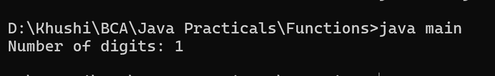

9. Write a Java method to count the number of digits in an integer with the value 2. The integer may be assumed to be non-negative.
class main {
public static void main(String[] args) {
int num = 2;
System.out.println("Number of digits: " + countDigits(num));
}
public static int countDigits(int num) {
int count = 0;
while (num > 0) {
num /= 10;
count++;
}
return count == 0 ? 1 : count;
}
}
